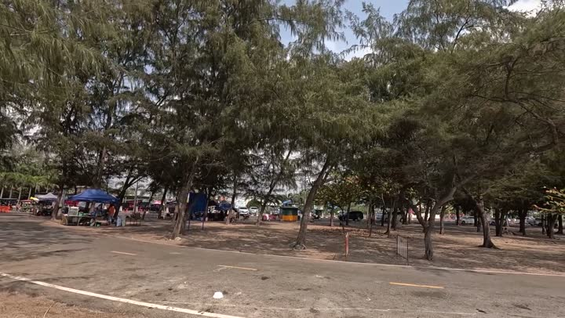

Атлас мест · Паттайя, Таиланд
Макаш (Makash, Pattaya)

Наш отзыв
Макаш на пляже Лаэм Чароен в Паттае — это небольшая палатка с едой прямо на берегу моря. Мы попробовали местные мини-бургеры за 35 бат и кофе. Бургеры оказались очень маленькими и слишком сладкими из-за соуса, который полностью заглушал вкус мяса. Место приятное для отдыха на первой линии пляжа.
Последний раз были здесь: 27 марта 2024
Что взять — мы пробовали
- мини-бургеры
- кофе
Цены на 2024 год — на момент съёмки
- мини — бургеры - 25-45 бат
- кофе — нормальная цена, но конкретная сумма не указана
Где это
12.909295199999999,100.8579915
Смотреть в наших роликах
ВЕЛИКОЛЕПНЫЙ ЗАКАТ на берегу, шашлык у макашки | ПАТТАЙЯ 2024
17 марта 2024 · место с 0:00 · все места ролика
ПЛЯЖ где НЕТ НИКОГО! , Laem Charoen Beach , ПАТТАЙЯ 2024
27 марта 2024 · место с 8:24 · все места ролика
Рядом из нашего атласа
Атлас мест канала «Юля и Дима / БЕЗ ТОРМОЗОВ». Описания составлены по нашим роликам; цены — на момент съёмки. Нашли неточность — напишите нам в Telegram.